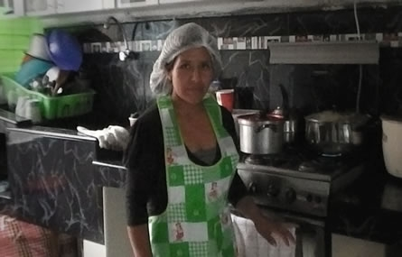

Cursos de Cocina para Las Empleadas de Hogar
Curso de cocina para Empleadas de Hogar
Cocina Peruana
NUESTRO TRATO
Usted realizará la compra sobre una la lista que yo le enviare un par de días antes del curso para luego enseñarle a cocinar a su empleada.
Le enviaremos un programa de cocina para toda la semana, Si quiere cambiar de receta puede hacerlo sin problema.
Al final del curso, recibirá un informe sobre su empleada, en relación a su trabajo y su dedicación, en caso no funcione le avisaremos con anticipación

Curso de cocina para empleadas de hogar
Cocina básica Peruana
Nos amoldamos a los días y horarios que más les convengan de lunes a viernes.
Nuestra recomendación sería impartirlas durante:
4 semanas / 1 día a la semana / 4 horas semanales.
De 10 a 14 h., cuando los niños estén en el colegio.
CURSO de 8 horas ( 12 recetas)
Nuestra recomendación sería impartirlas durante:
2 semanas / 1 día a la semana / 4 horas semanales.
De 10 a 14 h., cuando los niños estén en el colegio.
PORQUÉ DE ESTA MANERA?: Porque asi, no se distrae de su trabajo diario, organizando su tiempo y programándose mejor.
Cuatro horas cocinando, dan para mucho.
POR CIERTO: si la empleada no cumple las expectativas, sera comunicada inmediatamente. De nuestro curso, se sale cocinando.
- 
CONTENIDO DEL CURSO:
Multiples recetas hechas de la forma más tradicional, ¡como la abuela…! Guisos, Menestras, Comida Criolla, Postres, Pastas, etc…
Instrucciones sobre: Conservación, manipulación y descongelado de alimentos.
Le presentaremos una lista con más de 50 recetas para pueda elijir 5 por cada día del curso.
PROTOCOLO:
No está de más, aprender a colocar una mesa para determinadas ocasiones, servir los platos, maneras de uso de los platos y colocación de los cubiertos…?
Agencia de Empleos | empleos@agenciaevangelica.com
| Política de privacidad | Hosting | Diseño de Paginas Web
© 2010 Agencia Evangelica. Av. Brasil 2481 (Cuadra 24) Jesus Maria.